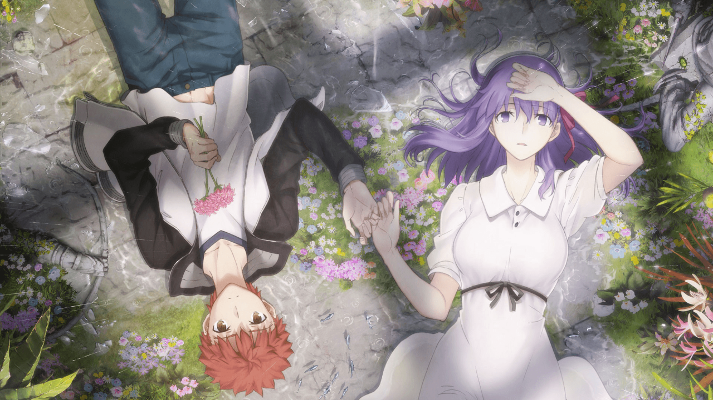
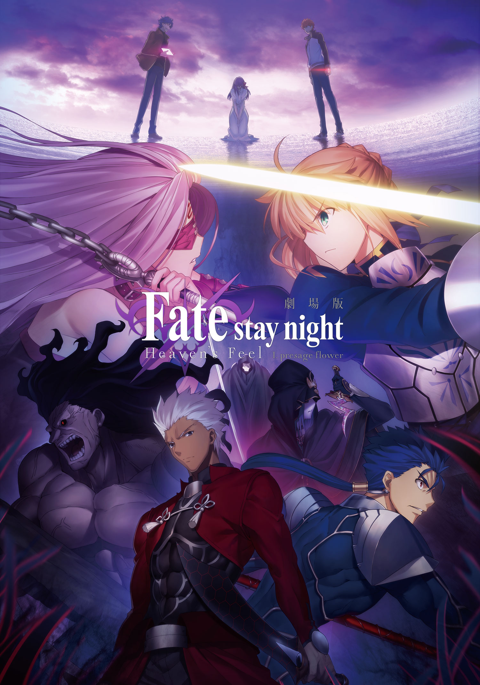
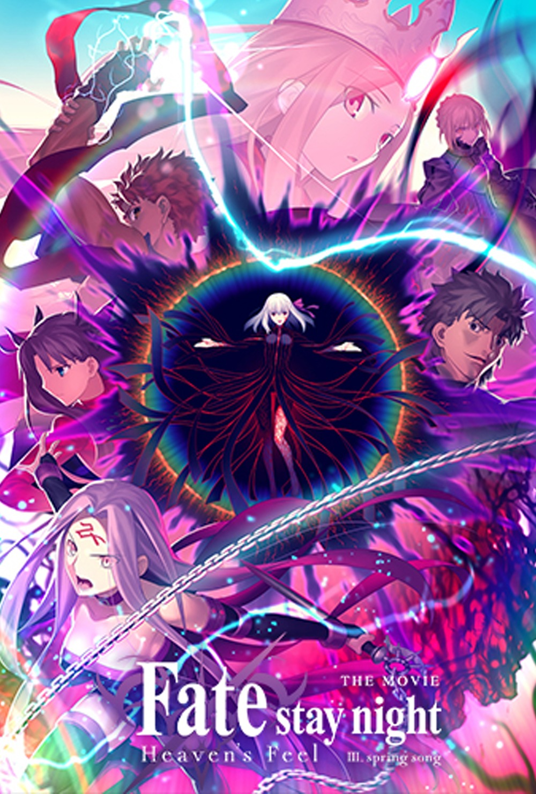
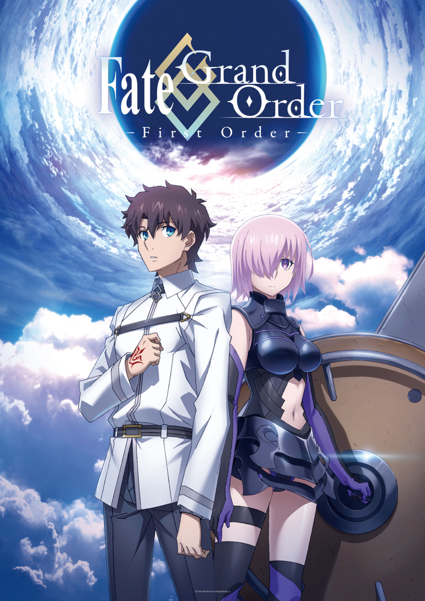

Fate Series
Fate series is a TYPE-MOON media collective that follows various events called Holy Grail Wars that involve Masters, generally accomplished magi, summoning Servants, Heroic Spirits, and battling each other until the last remaining pair can claim the purported Holy Grail. It began with the visual novelWP, Fate/stay night, and has since gathered a number of prequels, sequels, spin-offs, and adaptations bearing the same "Fate" name.
Must Watch Movies

Fate/stay night - Heaven's Feel - I. Presage Flower

Fate/stay night - Heaven's Feel - II. Lost Butterfly

Fate/stay night - Heaven's Feel - III. Spring Song

Fate/Grand Order -First Order-
Fate/stay night - Heaven's Feel - I.
Presage Flower
Presage Flower
Fate/stay night - Heaven's Feel - II.
Lost Butterfly
Lost Butterfly
Fate/stay night - Heaven's Feel - III.
Spring Song
Spring Song
Fate/Grand Order -
First Order
First Order